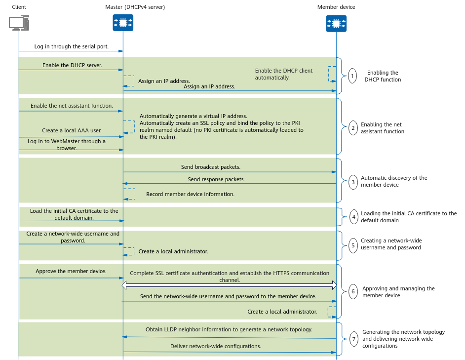

Network Setup Process
Prerequisites:
- All devices have been connected through physical cables.
- The devices have been powered on and started with the default configurations.
Figure 2 shows the network setup process when a device functions as both the master device and the DHCP server.
Figure 2 Network Setup Process
- Enabling the DHCP function:
- Enabling the DHCP server function: After the DHCPv4 server is started with default configurations, VLANIF1 is automatically created. You need to enable the DHCP server function on this interface.
- Enabling the DHCP client function: After the master device and member devices are started with default configurations, VLANIF1 is automatically created, and the DHCP client function is automatically enabled on this interface.
- Allocating an IP address: The DHCP server automatically allocates a management IP address to the DHCP client.
- Enabling the net assistant function: You need to enable the net assistant function on the master device.
- A default virtual IP address (10.231.10.253) is automatically generated.
- An SSL policy named netasstpolicy is automatically created and bound to the PKI realm named default (no PKI certificate is automatically loaded to the PKI realm). The SSL policy is configured for the net assistant function to enable the SSL peer verification function. That is, the master device verifies the SSL certificates of member devices.
- You can create a local AAA user on the master device and log in to WebMaster as this user.
- Automatic discovery of member devices: The Ubiquitous Autonomy Link (UAL) protocol is used to automatically discover member devices.
- The master device periodically sends broadcast packets carrying information such as the system MAC address, ESN, and device type to check whether member devices exist on the network.
- After receiving the broadcast packets, member devices record the master device's information and send response packets carrying their basic information (such as their MAC addresses and IP addresses) to the master device.
- Upon receiving the response packets, the master device records the member devices' basic information and adds them to the device approval list.
- You need to import the initial CA certificate (default_ca) to the default domain on the master device.
- Creating a network-wide username and password: You need to configure a network-wide username and password on the master device, which then uses these credentials to create a local administrator.
- Approving and managing member devices: You need to approve member devices on the master device.
- After a member device is approved, the master device sends an HTTPS connection request to the member device. After receiving this request, the member device sends a response packet and local certificate to the master device, which then verifies the certificate using the CA certificate in the PKI realm specified by the SSL policy. It also verifies the CN field in the local certificate based on the member device's ESN to authenticate its identity. The master and member devices then establish a secure HTTPS channel with each other.
- The master device sends a packet carrying the network-wide username and password to the member device through the HTTPS channel. The member device uses these credentials to create a local administrator.
- The master device manages the member device.
- Generating a network topology and delivering network-wide configurations:
- The master device generates a network topology by obtaining LLDP neighbor information of the member devices.
- The master device delivers network-wide configurations (such as network-wide VLAN orchestration, newly configured network-wide username and password, and basic wireless configurations) to member devices based on the topology to complete automatic deployment of network devices.